Most students of electricity begin their study with what is known as direct current (DC), which is electricity flowing in a constant direction, and/or possessing a voltage with constant polarity. DC is the kind of electricity made by a battery (with definite positive and negative terminals), or the kind of charge generated by rubbing certain types of materials against each other.
As useful and as easy to understand as DC is, it is not the only “kind” of electricity in use. Certain sources of electricity (most notably, rotary electro-mechanical generators) naturally produce voltages alternating in polarity, reversing positive and negative over time. Either as a voltage switching polarity or as a current switching direction back and forth, this “kind” of electricity is known as Alternating Current (AC): Figure below
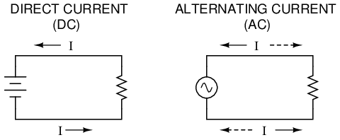
Direct vs alternating current
Whereas the familiar battery symbol is used as a generic symbol for any DC voltage source, the circle with the wavy line inside is the generic symbol for any AC voltage source.
One might wonder why anyone would bother with such a thing as AC. It is true that in some cases AC holds no practical advantage over DC. In applications where electricity is used to dissipate energy in the form of heat, the polarity or direction of current is irrelevant, so long as there is enough voltage and current to the load to produce the desired heat (power dissipation). However, with AC it is possible to build electric generators, motors and power distribution systems that are far more efficient than DC, and so we find AC used predominately across the world in high power applications. To explain the details of why this is so, a bit of background knowledge about AC is necessary.
If a machine is constructed to rotate a magnetic field around a set of stationary wire coils with the turning of a shaft, AC voltage will be produced across the wire coils as that shaft is rotated, in accordance with Faraday's Law of electromagnetic induction. This is the basic operating principle of an AC generator, also known as an alternator: Figure below
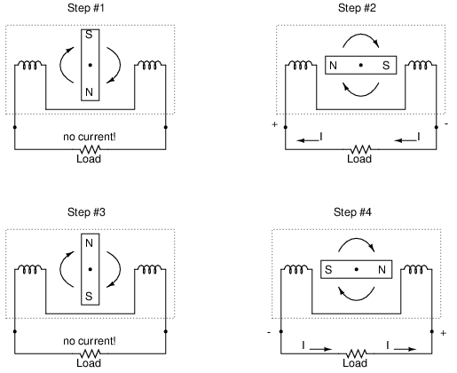
Alternator operation
Notice how the polarity of the voltage across the wire coils reverses as the opposite poles of the rotating magnet pass by. Connected to a load, this reversing voltage polarity will create a reversing current direction in the circuit. The faster the alternator's shaft is turned, the faster the magnet will spin, resulting in an alternating voltage and current that switches directions more often in a given amount of time.
While DC generators work on the same general principle of electromagnetic induction, their construction is not as simple as their AC counterparts. With a DC generator, the coil of wire is mounted in the shaft where the magnet is on the AC alternator, and electrical connections are made to this spinning coil via stationary carbon “brushes” contacting copper strips on the rotating shaft. All this is necessary to switch the coil's changing output polarity to the external circuit so the external circuit sees a constant polarity: Figure below
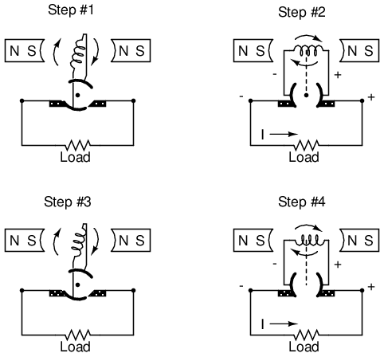
DC generator operation
The generator shown above will produce two pulses of voltage per revolution of the shaft, both pulses in the same direction (polarity). In order for a DC generator to produce constant voltage, rather than brief pulses of voltage once every 1/2 revolution, there are multiple sets of coils making intermittent contact with the brushes. The diagram shown above is a bit more simplified than what you would see in real life.
The problems involved with making and breaking electrical contact with a moving coil should be obvious (sparking and heat), especially if the shaft of the generator is revolving at high speed. If the atmosphere surrounding the machine contains flammable or explosive vapors, the practical problems of spark-producing brush contacts are even greater. An AC generator (alternator) does not require brushes and commutators to work, and so is immune to these problems experienced by DC generators.
The benefits of AC over DC with regard to generator design is also reflected in electric motors. While DC motors require the use of brushes to make electrical contact with moving coils of wire, AC motors do not. In fact, AC and DC motor designs are very similar to their generator counterparts (identical for the sake of this tutorial), the AC motor being dependent upon the reversing magnetic field produced by alternating current through its stationary coils of wire to rotate the rotating magnet around on its shaft, and the DC motor being dependent on the brush contacts making and breaking connections to reverse current through the rotating coil every 1/2 rotation (180 degrees).
So we know that AC generators and AC motors tend to be simpler than DC generators and DC motors. This relative simplicity translates into greater reliability and lower cost of manufacture. But what else is AC good for? Surely there must be more to it than design details of generators and motors! Indeed there is. There is an effect of electromagnetism known as mutual induction, whereby two or more coils of wire placed so that the changing magnetic field created by one induces a voltage in the other. If we have two mutually inductive coils and we energize one coil with AC, we will create an AC voltage in the other coil. When used as such, this device is known as a transformer: Figure below
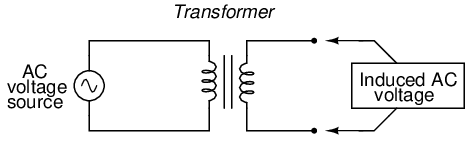
Transformer “transforms” AC voltage and current.
The fundamental significance of a transformer is its ability to step voltage up or down from the powered coil to the unpowered coil. The AC voltage induced in the unpowered (“secondary”) coil is equal to the AC voltage across the powered (“primary”) coil multiplied by the ratio of secondary coil turns to primary coil turns. If the secondary coil is powering a load, the current through the secondary coil is just the opposite: primary coil current multiplied by the ratio of primary to secondary turns. This relationship has a very close mechanical analogy, using torque and speed to represent voltage and current, respectively: Figure below
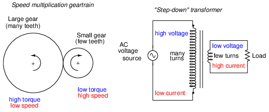
Speed multiplication gear train steps torque down and speed up. Step-down transformer steps voltage down and current up.
If the winding ratio is reversed so that the primary coil has less turns than the secondary coil, the transformer “steps up” the voltage from the source level to a higher level at the load: Figure below
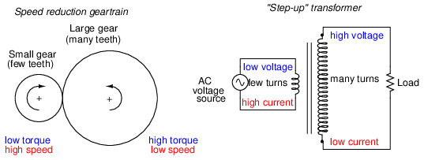
Speed reduction gear train steps torque up and speed down. Step-up transformer steps voltage up and current down.
The transformer's ability to step AC voltage up or down with ease gives AC an advantage unmatched by DC in the realm of power distribution in figure below. When transmitting electrical power over long distances, it is far more efficient to do so with stepped-up voltages and stepped-down currents (smaller-diameter wire with less resistive power losses), then step the voltage back down and the current back up for industry, business, or consumer use.
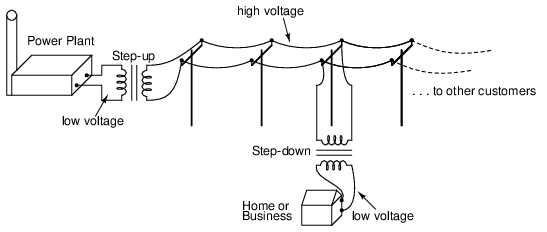
Transformers enable efficient long distance high voltage transmission of electric energy.
Transformer technology has made long-range electric power distribution practical. Without the ability to efficiently step voltage up and down, it would be cost-prohibitive to construct power systems for anything but close-range (within a few miles at most) use.
As useful as transformers are, they only work with AC, not DC. Because the phenomenon of mutual inductance relies on changing magnetic fields, and direct current (DC) can only produce steady magnetic fields, transformers simply will not work with direct current. Of course, direct current may be interrupted (pulsed) through the primary winding of a transformer to create a changing magnetic field (as is done in automotive ignition systems to produce high-voltage spark plug power from a low-voltage DC battery), but pulsed DC is not that different from AC. Perhaps more than any other reason, this is why AC finds such widespread application in power systems.
When an alternator produces AC voltage, the voltage switches polarity over time, but does so in a very particular manner. When graphed over time, the “wave” traced by this voltage of alternating polarity from an alternator takes on a distinct shape, known as a sine wave: Figure below
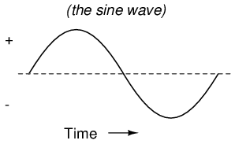
Graph of AC voltage over time (the sine wave).
In the voltage plot from an electromechanical alternator, the change from one polarity to the other is a smooth one, the voltage level changing most rapidly at the zero (“crossover”) point and most slowly at its peak. If we were to graph the trigonometric function of “sine” over a horizontal range of 0 to 360 degrees, we would find the exact same pattern as in Table below.
Trigonometric “sine” function.
| Angle (o) | sin(angle) | wave | Angle (o) | sin(angle) | wave |
|---|---|---|---|---|---|
| 0 | 0.0000 | zero | 180 | 0.0000 | zero |
| 15 | 0.2588 | + | 195 | -0.2588 | - |
| 30 | 0.5000 | + | 210 | -0.5000 | - |
| 45 | 0.7071 | + | 225 | -0.7071 | - |
| 60 | 0.8660 | + | 240 | -0.8660 | - |
| 75 | 0.9659 | + | 255 | -0.9659 | - |
| 90 | 1.0000 | +peak | 270 | -1.0000 | -peak |
| 105 | 0.9659 | + | 285 | -0.9659 | - |
| 120 | 0.8660 | + | 300 | -0.8660 | - |
| 135 | 0.7071 | + | 315 | -0.7071 | - |
| 150 | 0.5000 | + | 330 | -0.5000 | - |
| 165 | 0.2588 | + | 345 | -0.2588 | - |
| 180 | 0.0000 | zero | 360 | 0.0000 | zero |
The reason why an electromechanical alternator outputs sine-wave AC is due to the physics of its operation. The voltage produced by the stationary coils by the motion of the rotating magnet is proportional to the rate at which the magnetic flux is changing perpendicular to the coils (Faraday's Law of Electromagnetic Induction). That rate is greatest when the magnet poles are closest to the coils, and least when the magnet poles are furthest away from the coils. Mathematically, the rate of magnetic flux change due to a rotating magnet follows that of a sine function, so the voltage produced by the coils follows that same function.
If we were to follow the changing voltage produced by a coil in an alternator from any point on the sine wave graph to that point when the wave shape begins to repeat itself, we would have marked exactly one cycle of that wave. This is most easily shown by spanning the distance between identical peaks, but may be measured between any corresponding points on the graph. The degree marks on the horizontal axis of the graph represent the domain of the trigonometric sine function, and also the angular position of our simple two-pole alternator shaft as it rotates: Figure below
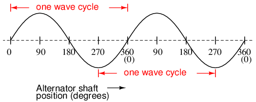
Alternator voltage as function of shaft position (time).
Since the horizontal axis of this graph can mark the passage of time as well as shaft position in degrees, the dimension marked for one cycle is often measured in a unit of time, most often seconds or fractions of a second. When expressed as a measurement, this is often called the period of a wave. The period of a wave in degrees is always 360, but the amount of time one period occupies depends on the rate voltage oscillates back and forth.
A more popular measure for describing the alternating rate of an AC voltage or current wave than period is the rate of that back-and-forth oscillation. This is called frequency. The modern unit for frequency is the Hertz (abbreviated Hz), which represents the number of wave cycles completed during one second of time. In the United States of America, the standard power-line frequency is 60 Hz, meaning that the AC voltage oscillates at a rate of 60 complete back-and-forth cycles every second. In Europe, where the power system frequency is 50 Hz, the AC voltage only completes 50 cycles every second. A radio station transmitter broadcasting at a frequency of 100 MHz generates an AC voltage oscillating at a rate of 100 million cycles every second.
Prior to the canonization of the Hertz unit, frequency was simply expressed as “cycles per second.” Older meters and electronic equipment often bore frequency units of “CPS” (Cycles Per Second) instead of Hz. Many people believe the change from self-explanatory units like CPS to Hertz constitutes a step backward in clarity. A similar change occurred when the unit of “Celsius” replaced that of “Centigrade” for metric temperature measurement. The name Centigrade was based on a 100-count (“Centi-”) scale (“-grade”) representing the melting and boiling points of H2O, respectively. The name Celsius, on the other hand, gives no hint as to the unit's origin or meaning.
Period and frequency are mathematical reciprocals of one another. That is to say, if a wave has a period of 10 seconds, its frequency will be 0.1 Hz, or 1/10 of a cycle per second:
An instrument called an oscilloscope, Figure below, is used to display a changing voltage over time on a graphical screen. You may be familiar with the appearance of an ECG or EKG (electrocardiograph) machine, used by physicians to graph the oscillations of a patient's heart over time. The ECG is a special-purpose oscilloscope expressly designed for medical use. General-purpose oscilloscopes have the ability to display voltage from virtually any voltage source, plotted as a graph with time as the independent variable. The relationship between period and frequency is very useful to know when displaying an AC voltage or current waveform on an oscilloscope screen. By measuring the period of the wave on the horizontal axis of the oscilloscope screen and reciprocating that time value (in seconds), you can determine the frequency in Hertz.
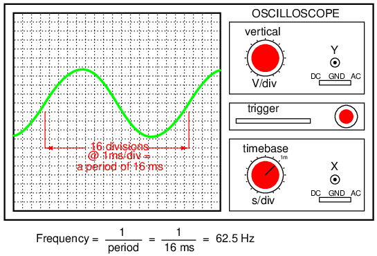
Time period of sinewave is shown on oscilloscope.
Voltage and current are by no means the only physical variables subject to variation over time. Much more common to our everyday experience is sound, which is nothing more than the alternating compression and decompression (pressure waves) of air molecules, interpreted by our ears as a physical sensation. Because alternating current is a wave phenomenon, it shares many of the properties of other wave phenomena, like sound. For this reason, sound (especially structured music) provides an excellent analogy for relating AC concepts.
In musical terms, frequency is equivalent to pitch. Low-pitch notes such as those produced by a tuba or bassoon consist of air molecule vibrations that are relatively slow (low frequency). High-pitch notes such as those produced by a flute or whistle consist of the same type of vibrations in the air, only vibrating at a much faster rate (higher frequency). Figure below is a table showing the actual frequencies for a range of common musical notes.
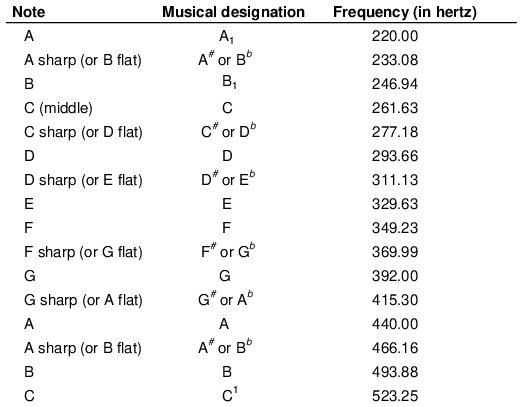
The frequency in Hertz (Hz) is shown for various musical notes.
Astute observers will notice that all notes on the table bearing the same letter designation are related by a frequency ratio of 2:1. For example, the first frequency shown (designated with the letter “A”) is 220 Hz. The next highest “A” note has a frequency of 440 Hz -- exactly twice as many sound wave cycles per second. The same 2:1 ratio holds true for the first A sharp (233.08 Hz) and the next A sharp (466.16 Hz), and for all note pairs found in the table.
Audibly, two notes whose frequencies are exactly double each other sound remarkably similar. This similarity in sound is musically recognized, the shortest span on a musical scale separating such note pairs being called an octave. Following this rule, the next highest “A” note (one octave above 440 Hz) will be 880 Hz, the next lowest “A” (one octave below 220 Hz) will be 110 Hz. A view of a piano keyboard helps to put this scale into perspective: Figure below
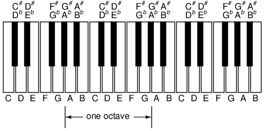
An octave is shown on a musical keyboard.
As you can see, one octave is equal to seven white keys' worth of distance on a piano keyboard. The familiar musical mnemonic (doe-ray-mee-fah-so-lah-tee) -- yes, the same pattern immortalized in the whimsical Rodgers and Hammerstein song sung in The Sound of Music -- covers one octave from C to C.
While electromechanical alternators and many other physical phenomena naturally produce sine waves, this is not the only kind of alternating wave in existence. Other “waveforms” of AC are commonly produced within electronic circuitry. Here are but a few sample waveforms and their common designations in figure below
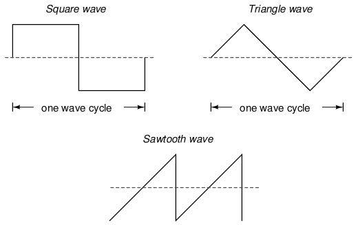
Some common waveshapes (waveforms).
These waveforms are by no means the only kinds of waveforms in existence. They're simply a few that are common enough to have been given distinct names. Even in circuits that are supposed to manifest “pure” sine, square, triangle, or sawtooth voltage/current waveforms, the real-life result is often a distorted version of the intended waveshape. Some waveforms are so complex that they defy classification as a particular “type” (including waveforms associated with many kinds of musical instruments). Generally speaking, any waveshape bearing close resemblance to a perfect sine wave is termed sinusoidal, anything different being labeled as non-sinusoidal. Being that the waveform of an AC voltage or current is crucial to its impact in a circuit, we need to be aware of the fact that AC waves come in a variety of shapes.
So far we know that AC voltage alternates in polarity and AC current alternates in direction. We also know that AC can alternate in a variety of different ways, and by tracing the alternation over time we can plot it as a “waveform.” We can measure the rate of alternation by measuring the time it takes for a wave to evolve before it repeats itself (the “period”), and express this as cycles per unit time, or “frequency.” In music, frequency is the same as pitch, which is the essential property distinguishing one note from another.
However, we encounter a measurement problem if we try to express how large or small an AC quantity is. With DC, where quantities of voltage and current are generally stable, we have little trouble expressing how much voltage or current we have in any part of a circuit. But how do you grant a single measurement of magnitude to something that is constantly changing?
One way to express the intensity, or magnitude (also called the amplitude), of an AC quantity is to measure its peak height on a waveform graph. This is known as the peak or crest value of an AC waveform: Figure below
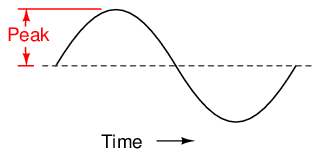
Peak voltage of a waveform.
Another way is to measure the total height between opposite peaks. This is known as the peak-to-peak (P-P) value of an AC waveform: Figure below
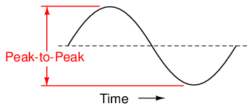
Peak-to-peak voltage of a waveform.
Unfortunately, either one of these expressions of waveform amplitude can be misleading when comparing two different types of waves. For example, a square wave peaking at 10 volts is obviously a greater amount of voltage for a greater amount of time than a triangle wave peaking at 10 volts. The effects of these two AC voltages powering a load would be quite different: Figure below
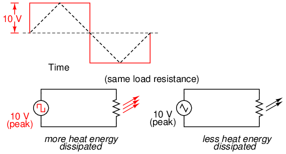
A square wave produces a greater heating effect than the same peak voltage triangle wave.
One way of expressing the amplitude of different waveshapes in a more equivalent fashion is to mathematically average the values of all the points on a waveform's graph to a single, aggregate number. This amplitude measure is known simply as the average value of the waveform. If we average all the points on the waveform algebraically (that is, to consider their sign, either positive or negative), the average value for most waveforms is technically zero, because all the positive points cancel out all the negative points over a full cycle: Figure below
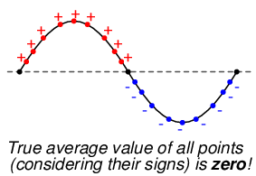
The average value of a sinewave is zero.
This, of course, will be true for any waveform having equal-area portions above and below the “zero” line of a plot. However, as a practical measure of a waveform's aggregate value, “average” is usually defined as the mathematical mean of all the points' absolute values over a cycle. In other words, we calculate the practical average value of the waveform by considering all points on the wave as positive quantities, as if the waveform looked like this: Figure below
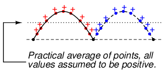
Waveform seen by AC “average responding” meter.
Polarity-insensitive mechanical meter movements (meters designed to respond equally to the positive and negative half-cycles of an alternating voltage or current) register in proportion to the waveform's (practical) average value, because the inertia of the pointer against the tension of the spring naturally averages the force produced by the varying voltage/current values over time. Conversely, polarity-sensitive meter movements vibrate uselessly if exposed to AC voltage or current, their needles oscillating rapidly about the zero mark, indicating the true (algebraic) average value of zero for a symmetrical waveform. When the “average” value of a waveform is referenced in this text, it will be assumed that the “practical” definition of average is intended unless otherwise specified.
Another method of deriving an aggregate value for waveform amplitude is based on the waveform's ability to do useful work when applied to a load resistance. Unfortunately, an AC measurement based on work performed by a waveform is not the same as that waveform's “average” value, because the power dissipated by a given load (work performed per unit time) is not directly proportional to the magnitude of either the voltage or current impressed upon it. Rather, power is proportional to the square of the voltage or current applied to a resistance (P = E2/R, and P = I2R). Although the mathematics of such an amplitude measurement might not be straightforward, the utility of it is.
Consider a bandsaw and a jigsaw, two pieces of modern woodworking equipment. Both types of saws cut with a thin, toothed, motor-powered metal blade to cut wood. But while the bandsaw uses a continuous motion of the blade to cut, the jigsaw uses a back-and-forth motion. The comparison of alternating current (AC) to direct current (DC) may be likened to the comparison of these two saw types: Figure below
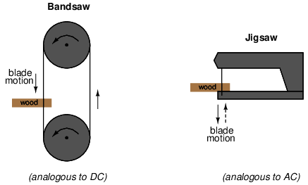
Bandsaw-jigsaw analogy of DC vs AC.
The problem of trying to describe the changing quantities of AC voltage or current in a single, aggregate measurement is also present in this saw analogy: how might we express the speed of a jigsaw blade? A bandsaw blade moves with a constant speed, similar to the way DC voltage pushes or DC current moves with a constant magnitude. A jigsaw blade, on the other hand, moves back and forth, its blade speed constantly changing. What is more, the back-and-forth motion of any two jigsaws may not be of the same type, depending on the mechanical design of the saws. One jigsaw might move its blade with a sine-wave motion, while another with a triangle-wave motion. To rate a jigsaw based on its peak blade speed would be quite misleading when comparing one jigsaw to another (or a jigsaw with a bandsaw!). Despite the fact that these different saws move their blades in different manners, they are equal in one respect: they all cut wood, and a quantitative comparison of this common function can serve as a common basis for which to rate blade speed.
Picture a jigsaw and bandsaw side-by-side, equipped with identical blades (same tooth pitch, angle, etc.), equally capable of cutting the same thickness of the same type of wood at the same rate. We might say that the two saws were equivalent or equal in their cutting capacity. Might this comparison be used to assign a “bandsaw equivalent” blade speed to the jigsaw's back-and-forth blade motion; to relate the wood-cutting effectiveness of one to the other? This is the general idea used to assign a “DC equivalent” measurement to any AC voltage or current: whatever magnitude of DC voltage or current would produce the same amount of heat energy dissipation through an equal resistance:Figure below
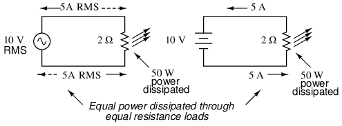
An RMS voltage produces the same heating effect as a the same DC voltage
In the two circuits above, we have the same amount of load resistance (2 Ω) dissipating the same amount of power in the form of heat (50 watts), one powered by AC and the other by DC. Because the AC voltage source pictured above is equivalent (in terms of power delivered to a load) to a 10 volt DC battery, we would call this a “10 volt” AC source. More specifically, we would denote its voltage value as being 10 volts RMS. The qualifier “RMS” stands for Root Mean Square, the algorithm used to obtain the DC equivalent value from points on a graph (essentially, the procedure consists of squaring all the positive and negative points on a waveform graph, averaging those squared values, then taking the square root of that average to obtain the final answer). Sometimes the alternative terms equivalent or DC equivalent are used instead of “RMS,” but the quantity and principle are both the same.
RMS amplitude measurement is the best way to relate AC quantities to DC quantities, or other AC quantities of differing waveform shapes, when dealing with measurements of electric power. For other considerations, peak or peak-to-peak measurements may be the best to employ. For instance, when determining the proper size of wire (ampacity) to conduct electric power from a source to a load, RMS current measurement is the best to use, because the principal concern with current is overheating of the wire, which is a function of power dissipation caused by current through the resistance of the wire. However, when rating insulators for service in high-voltage AC applications, peak voltage measurements are the most appropriate, because the principal concern here is insulator “flashover” caused by brief spikes of voltage, irrespective of time.
Peak and peak-to-peak measurements are best performed with an oscilloscope, which can capture the crests of the waveform with a high degree of accuracy due to the fast action of the cathode-ray-tube in response to changes in voltage. For RMS measurements, analog meter movements (D'Arsonval, Weston, iron vane, electrodynamometer) will work so long as they have been calibrated in RMS figures. Because the mechanical inertia and dampening effects of an electromechanical meter movement makes the deflection of the needle naturally proportional to the average value of the AC, not the true RMS value, analog meters must be specifically calibrated (or mis-calibrated, depending on how you look at it) to indicate voltage or current in RMS units. The accuracy of this calibration depends on an assumed waveshape, usually a sine wave.
Electronic meters specifically designed for RMS measurement are best for the task. Some instrument manufacturers have designed ingenious methods for determining the RMS value of any waveform. One such manufacturer produces “True-RMS” meters with a tiny resistive heating element powered by a voltage proportional to that being measured. The heating effect of that resistance element is measured thermally to give a true RMS value with no mathematical calculations whatsoever, just the laws of physics in action in fulfillment of the definition of RMS. The accuracy of this type of RMS measurement is independent of waveshape.
For “pure” waveforms, simple conversion coefficients exist for equating Peak, Peak-to-Peak, Average (practical, not algebraic), and RMS measurements to one another: Figure below
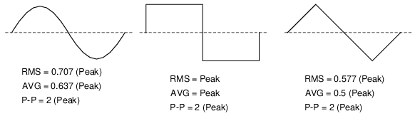
Conversion factors for common waveforms.
In addition to RMS, average, peak (crest), and peak-to-peak measures of an AC waveform, there are ratios expressing the proportionality between some of these fundamental measurements. The crest factor of an AC waveform, for instance, is the ratio of its peak (crest) value divided by its RMS value. The form factor of an AC waveform is the ratio of its RMS value divided by its average value. Square-shaped waveforms always have crest and form factors equal to 1, since the peak is the same as the RMS and average values. Sinusoidal waveforms have an RMS value of 0.707 (the reciprocal of the square root of 2) and a form factor of 1.11 (0.707/0.636). Triangle- and sawtooth-shaped waveforms have RMS values of 0.577 (the reciprocal of square root of 3) and form factors of 1.15 (0.577/0.5).
Bear in mind that the conversion constants shown here for peak, RMS, and average amplitudes of sine waves, square waves, and triangle waves hold true only for pure forms of these waveshapes. The RMS and average values of distorted waveshapes are not related by the same ratios: Figure below
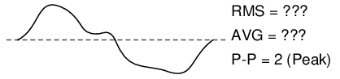
Arbitrary waveforms have no simple conversions.
This is a very important concept to understand when using an analog D'Arsonval meter movement to measure AC voltage or current. An analog D'Arsonval movement, calibrated to indicate sine-wave RMS amplitude, will only be accurate when measuring pure sine waves. If the waveform of the voltage or current being measured is anything but a pure sine wave, the indication given by the meter will not be the true RMS value of the waveform, because the degree of needle deflection in an analog D'Arsonval meter movement is proportional to the average value of the waveform, not the RMS. RMS meter calibration is obtained by “skewing” the span of the meter so that it displays a small multiple of the average value, which will be equal to be the RMS value for a particular waveshape and a particular waveshape only.
Since the sine-wave shape is most common in electrical measurements, it is the waveshape assumed for analog meter calibration, and the small multiple used in the calibration of the meter is 1.1107 (the form factor: 0.707/0.636: the ratio of RMS divided by average for a sinusoidal waveform). Any waveshape other than a pure sine wave will have a different ratio of RMS and average values, and thus a meter calibrated for sine-wave voltage or current will not indicate true RMS when reading a non-sinusoidal wave. Bear in mind that this limitation applies only to simple, analog AC meters not employing “True-RMS” technology.
Over the course of the next few chapters, you will learn that AC circuit measurements and calculations can get very complicated due to the complex nature of alternating current in circuits with inductance and capacitance. However, with simple circuits (figure below) involving nothing more than an AC power source and resistance, the same laws and rules of DC apply simply and directly.
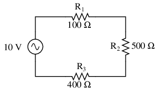
AC circuit calculations for resistive circuits are the same as for DC.
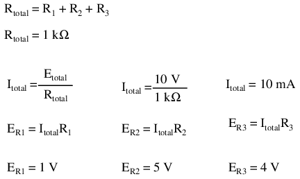
Series resistances still add, parallel resistances still diminish, and the Laws of Kirchhoff and Ohm still hold true. Actually, as we will discover later on, these rules and laws always hold true, its just that we have to express the quantities of voltage, current, and opposition to current in more advanced mathematical forms. With purely resistive circuits, however, these complexities of AC are of no practical consequence, and so we can treat the numbers as though we were dealing with simple DC quantities.
Because all these mathematical relationships still hold true, we can make use of our familiar “table” method of organizing circuit values just as with DC:
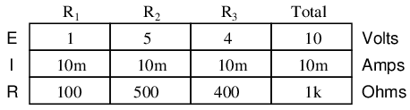
One major caveat needs to be given here: all measurements of AC voltage and current must be expressed in the same terms (peak, peak-to-peak, average, or RMS). If the source voltage is given in peak AC volts, then all currents and voltages subsequently calculated are cast in terms of peak units. If the source voltage is given in AC RMS volts, then all calculated currents and voltages are cast in AC RMS units as well. This holds true for any calculation based on Ohm's Laws, Kirchhoff's Laws, etc. Unless otherwise stated, all values of voltage and current in AC circuits are generally assumed to be RMS rather than peak, average, or peak-to-peak. In some areas of electronics, peak measurements are assumed, but in most applications (especially industrial electronics) the assumption is RMS.
Things start to get complicated when we need to relate two or more AC voltages or currents that are out of step with each other. By “out of step,” I mean that the two waveforms are not synchronized: that their peaks and zero points do not match up at the same points in time. The graph in figure below illustrates an example of this.
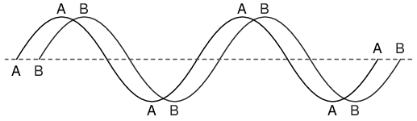
Out of phase waveforms
The two waves shown above (A versus B) are of the same amplitude and frequency, but they are out of step with each other. In technical terms, this is called a phase shift. Earlier we saw how we could plot a “sine wave” by calculating the trigonometric sine function for angles ranging from 0 to 360 degrees, a full circle. The starting point of a sine wave was zero amplitude at zero degrees, progressing to full positive amplitude at 90 degrees, zero at 180 degrees, full negative at 270 degrees, and back to the starting point of zero at 360 degrees. We can use this angle scale along the horizontal axis of our waveform plot to express just how far out of step one wave is with another: Figure below
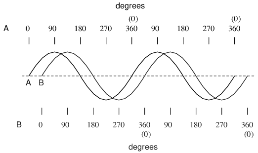
Wave A leads wave B by 45o
The shift between these two waveforms is about 45 degrees, the “A” wave being ahead of the “B” wave. A sampling of different phase shifts is given in the following graphs to better illustrate this concept: Figure below
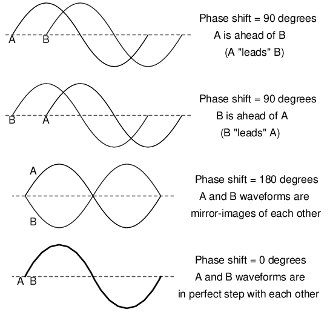
Examples of phase shifts.
Because the waveforms in the above examples are at the same frequency, they will be out of step by the same angular amount at every point in time. For this reason, we can express phase shift for two or more waveforms of the same frequency as a constant quantity for the entire wave, and not just an expression of shift between any two particular points along the waves. That is, it is safe to say something like, “voltage 'A' is 45 degrees out of phase with voltage 'B'.” Whichever waveform is ahead in its evolution is said to be leading and the one behind is said to be lagging.
Phase shift, like voltage, is always a measurement relative between two things. There's really no such thing as a waveform with an absolute phase measurement because there's no known universal reference for phase. Typically in the analysis of AC circuits, the voltage waveform of the power supply is used as a reference for phase, that voltage stated as “xxx volts at 0 degrees.” Any other AC voltage or current in that circuit will have its phase shift expressed in terms relative to that source voltage.
This is what makes AC circuit calculations more complicated than DC. When applying Ohm's Law and Kirchhoff's Laws, quantities of AC voltage and current must reflect phase shift as well as amplitude. Mathematical operations of addition, subtraction, multiplication, and division must operate on these quantities of phase shift as well as amplitude. Fortunately, there is a mathematical system of quantities called complex numbers ideally suited for this task of representing amplitude and phase.
Because the subject of complex numbers is so essential to the understanding of AC circuits, the next chapter will be devoted to that subject alone.
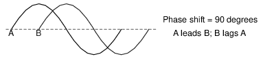
One of the more fascinating applications of electricity is in the generation of invisible ripples of energy called radio waves. The limited scope of this lesson on alternating current does not permit full exploration of the concept, some of the basic principles will be covered.
With Oersted's accidental discovery of electromagnetism, it was realized that electricity and magnetism were related to each other. When an electric current was passed through a conductor, a magnetic field was generated perpendicular to the axis of flow. Likewise, if a conductor was exposed to a change in magnetic flux perpendicular to the conductor, a voltage was produced along the length of that conductor. So far, scientists knew that electricity and magnetism always seemed to affect each other at right angles. However, a major discovery lay hidden just beneath this seemingly simple concept of related perpendicularity, and its unveiling was one of the pivotal moments in modern science.
This breakthrough in physics is hard to overstate. The man responsible for this conceptual revolution was the Scottish physicist James Clerk Maxwell (1831-1879), who “unified” the study of electricity and magnetism in four relatively tidy equations. In essence, what he discovered was that electric and magnetic fields were intrinsically related to one another, with or without the presence of a conductive path for electrons to flow. Stated more formally, Maxwell's discovery was this:
A changing electric field produces a perpendicular magnetic field, and
A changing magnetic field produces a perpendicular electric field.
All of this can take place in open space, the alternating electric and magnetic fields supporting each other as they travel through space at the speed of light. This dynamic structure of electric and magnetic fields propagating through space is better known as an electromagnetic wave.
There are many kinds of natural radiative energy composed of electromagnetic waves. Even light is electromagnetic in nature. So are X-rays and “gamma” ray radiation. The only difference between these kinds of electromagnetic radiation is the frequency of their oscillation (alternation of the electric and magnetic fields back and forth in polarity). By using a source of AC voltage and a special device called an antenna, we can create electromagnetic waves (of a much lower frequency than that of light) with ease.
An antenna is nothing more than a device built to produce a dispersing electric or magnetic field. Two fundamental types of antennae are the dipole and the loop: Figure below
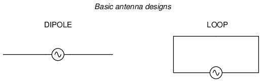
Dipole and loop antennae
While the dipole looks like nothing more than an open circuit, and the loop a short circuit, these pieces of wire are effective radiators of electromagnetic fields when connected to AC sources of the proper frequency. The two open wires of the dipole act as a sort of capacitor (two conductors separated by a dielectric), with the electric field open to dispersal instead of being concentrated between two closely-spaced plates. The closed wire path of the loop antenna acts like an inductor with a large air core, again providing ample opportunity for the field to disperse away from the antenna instead of being concentrated and contained as in a normal inductor.
As the powered dipole radiates its changing electric field into space, a changing magnetic field is produced at right angles, thus sustaining the electric field further into space, and so on as the wave propagates at the speed of light. As the powered loop antenna radiates its changing magnetic field into space, a changing electric field is produced at right angles, with the same end-result of a continuous electromagnetic wave sent away from the antenna. Either antenna achieves the same basic task: the controlled production of an electromagnetic field.
When attached to a source of high-frequency AC power, an antenna acts as a transmitting device, converting AC voltage and current into electromagnetic wave energy. Antennas also have the ability to intercept electromagnetic waves and convert their energy into AC voltage and current. In this mode, an antenna acts as a receiving device: Figure below
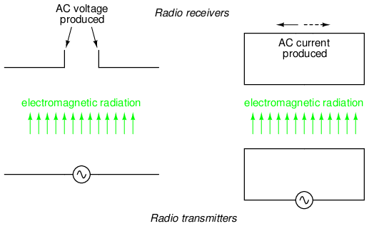
Basic radio transmitter and receiver
While there is much more that may be said about antenna technology, this brief introduction is enough to give you the general idea of what's going on (and perhaps enough information to provoke a few experiments).
Contributors to this chapter are listed in chronological order of their contributions, from most recent to first. See Appendix 2 (Contributor List) for dates and contact information.
Harvey Lew (February 7, 2004): Corrected typographical error: “circuit” should have been “circle”.
Duane Damiano (February 25, 2003): Pointed out magnetic polarity error in DC generator illustration.
Mark D. Zarella (April 28, 2002): Suggestion for improving explanation of “average” waveform amplitude.
John Symonds (March 28, 2002): Suggestion for improving explanation of the unit “Hertz.”
Jason Starck (June 2000): HTML document formatting, which led to a much better-looking second edition.
Lessons In Electric Circuits copyright (C) 2000-2023 Tony R. Kuphaldt, under the terms and conditions of the CC BY License.
{kind=link}
{kind=link}
{kind=link}
{kind=link}
{kind=link}
{kind=link}
{kind=link}
{kind=link}
{kind=link}
{kind=link}
{kind=link}
{kind=link}
{kind=link}
{kind=link}
{kind=link}
{kind=link}
{kind=link}
{kind=link}
{kind=link}
{kind=link}
{kind=link}
{kind=link}
{kind=link}
{kind=link}
{kind=link}
{kind=link}
{kind=link}
{kind=link}